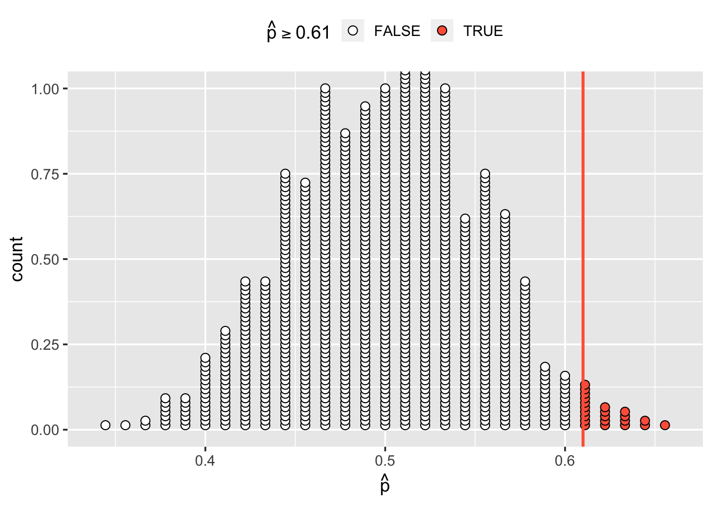
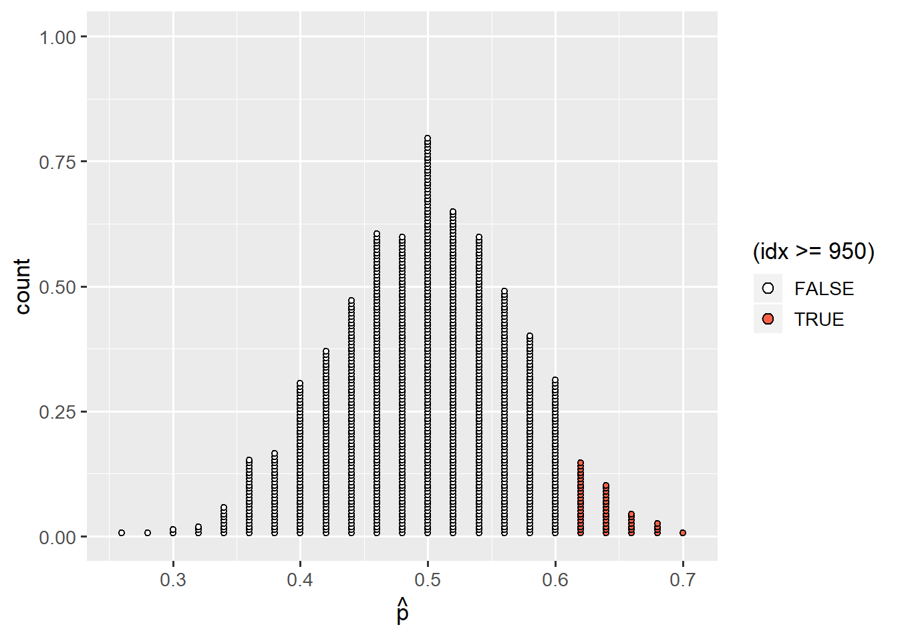

Chapter 1 Type I and Type II Errors, Power!
Instructions
- In this two-hour lab we will go through worked examples in the first hour, and you will attempt to answer some questions in the second hour.
- The Rmarkdown file for this week is here.
Learning outcomes
LO1. Recap hypothesis testing
LO2. Understand the different types of errors
LO3. Introduce statistical power
Reading
?????????????????????
1.1 Overview of last week
Last week we learned to frame a research question in terms of null and alternative hypotheses about parameters.
We likened the null hypothesis (\(H_0\)) to a ‘random chance model’ - i.e., if differences or effects that we observe are actually just due to sampling variation.
We generated a distribution for the null hypothesis (the null distribution) which reflected how much sample statistics would vary due to chance if the null hypothesis is true (e.g., if there really is no difference/effect). We did this by simulating lots of samples and computing the statistic on each of the samples.
We then compared the observed statistic to the null distribution we had generated. This is equivalent to asking how likely it would be to get our observed statistic if the null hypothesis was actually true. We learned that the p-value is the proportion of simulated sample statistics in our null distribution which were as or more extreme than our observed statistic.
Finally, we thought about how we might make a formal decision about whether or not to reject the null hypothesis based on our p-value.
This week, we will recap this process of hypothesis testing, before thinking about the ways in which this method might lead to error.
1.2 Walkthrough
Example 1: Coin flip
Research Question & Hypotheses
Is our coin biased?
Null hypothesis: We’re just as likely to get heads as tails when we flip the coin.
\[H_0: p = 0.5\]
Alternative hypothesis: We’re more likely to see either heads or tails when we flip the coin.
\[H_1: p \neq 0.5\]
Data collection
We flip the coin 90 times, and it lands on heads 55 times.
Analysis
Steps
- Calculate our statistic
- Generate the null distribution
- Calculate the probability of seeing our statistic (or one which is farther away from the null) if the null were true (this is the p-value)
1. Calculate our statistic, \(\hat{p}\)
## [1] 0.61111112. Generate the null distribution
Remember that the null distribution is what we would expect if the null hypothesis were true - it is how much the statistics computed from samples of size \(n\) would vary if the null is true.
In our case, this quantifies how much our statistic (the proportion of heads) in a sample of size 90 would vary if the true probability of the coin landing on heads were 1/2.
# Specify our possible outcomes and their probabilities under the null
outcomes <- tibble(vals = factor(c('Heads', 'Tails')))
prob <- c(1/2, 1/2)
# generate samples under the null
samples <- rep_sample_n(outcomes, size = 90, replace = TRUE, reps = 1000, prob = prob)
# calculate the statistics for each sample to create the null distribution
null_distribution <- samples %>%
group_by(replicate) %>%
summarise(prop = sum(vals == 'Heads') / n())and we can now plot our null distribution:
ggplot(null_distribution, aes(x = prop)) +
geom_dotplot(binwidth = 0.01, dotsize = 0.5, fill = 'white', stackratio = 0.5) +
labs(x = expr(hat(p)))
And plot the observed statistic on top, like we did last week.
ggplot(null_distribution, aes(x = prop, fill = (prop >= 0.61))) +
geom_dotplot(binwidth = 0.01, dotsize = 0.5, stackratio = 0.5) +
scale_fill_manual(values = c('white', 'tomato1')) +
geom_vline(xintercept = 0.61, color = 'tomato1', size = 1) +
labs(x = expr(hat(p)), fill = expr(hat(p) >= 0.61))
3. Calculate our p-value
How surprising is 55 of 90 coin flips? We can compare it against the null distribution.
► Question
What is our p-value?
- The proportion of the null distribution which is \(\geq0.61\)
- The proportion of the null distribution which is \(\geq0.61\) or \(\leq0.39\)
- 2 times the proportion of the null distribution which is \(\geq0.61\)
► Solution
► Question
What is our formal decision about our hypotheses?
- Not enough evidence to reject \(H_0\)
(\(H_0:\) We’re just as likely to get heads as tails when we flip the coin.) - Evidence in favour of \(H_1\)
(\(H_1:\) We’re more likely to see either heads or tails when we flip the coin.)
► Solution
An analogy
Might we have made a mistake here? Is 55 out of 90 coin flips surprising enough for us to reject the hypothesis that the coin is fair?
Last week we discussed an analogy in law, in which a person on trial is presumed innocent until proven guilty. Similarly, we presume \(H_0\) to be true until there is strong evidence to reject it. How strong must the evidence be? How do we avoid wrongly convicting an innocent person? (i.e., wrongly rejecting an hypothesis which is actually true?)
Two different types of errors
| Person is innocent | Person is guilty | |
|---|---|---|
| Verdict = Innocent | Correct decision | Criminal goes free |
| Verdict = Guilty | Wrongful conviction | Correct decision |
| \(H_0\) is True | \(H_0\) is False | |
|---|---|---|
| Test doesn’t reject \(H_0\) | Correct decision | Type II Error (\(\beta\)) |
| Test rejects \(H_0\) | Type I Error (\(\alpha\)) |
Correct decision |
Type I errors
If the null hypothesis is true, then the sampling distribution of our statistic follows the null distribution which we constructed above, and we will reject (incorrectly) any sample statistic which results in a p-value which is less than or equal to our \(\alpha\) level (e.g., the 0.05 we set earlier).
So the probability of making this error is equal to the \(alpha\) level which we set.
In other words, when the null hypothesis is true, 0.05 (or 5%) of the random samples we could take would result in us rejecting it.
A thought experiment
- there are 20 researchers.
- each researcher has a perfectly balanced/fair coin.
- each researcher conducts a statistical test at \(\alpha = 0.05\) to evaluate whether their coin is fair (lands on heads equally as often as it lands on tails).
► Question
How many of the researchers’ tests would we expect to result in a type I error?
Remember: The probability of making a Type I error is the probability of getting an unlikely sample statistic simply due to chance sampling variation (i.e., we just happen to get a random sample with an unlikely statistic).
► Solution
Type II errors and Power
The other kind of error we might make is a type II error, and is denoted by \(\beta\).
This happens when \(H_0\) is false, but we do not have enough evidence to reject it.
In our table, the columns specify the possible states of the world (\(H_0\) is either True or False).
In each of the possible states of the world, there are two potential outcomes of conducting a statistical test (Reject \(H-0\) or Don’t reject \(H_0\)).
We have seen that:
+ if \(H_0\) is true, then the probability of incorrectly rejecting \(H_0\) is \(\alpha\) (often set at 0.05), and the probability of correctly retaining (not rejecting) \(H_0\) is 0.95.
+ if \(H_0\) is false, then the probability of incorrectly failing to reject \(H_0\) is \(\beta\), and the probability of correctly rejecting \(H_0\) is \(1-\beta\). This is known as the statistical power of our test.
| \(H_0\) is True | \(H_0\) is False | |
|---|---|---|
| Test doesn’t reject \(H_0\) | Correct 1-\(\alpha\) |
Type II Error (\(\beta\)) |
| Test rejects \(H_0\) | Type I Error (\(\alpha\)) |
Correct 1-\(\beta\) Power |
Statistical power
Statistical power is the probability of a hypothesis test of finding an effect if there is an effect to be found.
Example 2: A biased coin
I have a trick coin which is weighted so that it lands on heads 60% of the time (rather than the usual 50% for a normal fair coin).
Oh no! Tom has noticed that whenever we flip a coin, I always call heads, and I often seem. He accuses me of cheating by using a trick coin which is biased to land on!
I make him an offer: he can flip the coin 50 times in order to decide whether or not it really is a trick coin.
► Question
In Tom’s 50 coin flips, what proportion of heads would lead him to the correct conclusion that the coin is a trick coin?
► Solution
► Question
Things we know so far:
- The coin is rigged to land on heads on 60% of flips - the true probability of heads is 0.6.
- If 62% or more of Tom’s 50 coin flips come up heads, then he will reject his null hypothesis (that the coin is fair)
What’s the probability that Tom’s 50 flips will come up with 62% or more heads?
In other words, what is the power of his test?
► Solution
Generalising it
- When we conduct NHST, we set \(\alpha\).
- In setting \(\alpha\), we define a critical region under the null distribution. The critical value is the value of the statistic which defines the start of this region. Any statistic more extreme than this will result in rejecting the null hypothesis.
- If the null hypothesis is false, the probability that we reject the null hypothesis depends on a) how far away from the null hypothesis the true state of the world is, and b) our sample size.
- In our example, we knew the true bias of the coin. But Tom didn’t! What Tom could do, is calculate the power of his test assuming a given value for \(p\). He might have thought to himself “hmm, that coin seems to land on heads about 3/4 of the time. I want to know the probability of me being able to correctly reject the null hypothesis is, if the coin is actually biased that much”.
The important thing is that, given an assumed effect size (i.e., difference from the null hypothesis), we can compute the power of a test based on our given sample size. This corresponds to the probability of getting a statistic more extreme than the critical value, given a theorised effect size.
Had Tom used the code above he might have called his distributiontheoretical_distributionrather thantrue_distribution!
Overlapping distributions
Talk through applet
https://istats.shinyapps.io/power/ https://rpsychologist.com/d3/NHST/
1.3 Summary
1.4 Lab
1.4.1 Exercise 1: Calculating power for a different coin.
If my trick coin was actually weighted so that it landed on heads 75% of the time, what would the power of Tom’s test (50 flips) be?
► Question
► Solution
1.4.2 Exercise 2: Calculating sample size (number of flips) for a desired level of power
For a given effect size (i.e., assumed difference from the null hypothesis), we can compute the power of a test based on a given sample size.
So, in testing a biased coin, we can calculate the power of a test for different possible biases of coin (e.g., assuming the coin to be biased towards heads 55%, 60%, 75% of the time).
Importantly, we can also decide on what we want the power of a test to be, and ask what the minimum sample size is that is needed to detect a given effect size.
Q2 - Assuming the coin to be biased towards landing on heads 75% of the time, how many coin flips should Tom do in order to increase his power to 80%?
► Question
► Solution